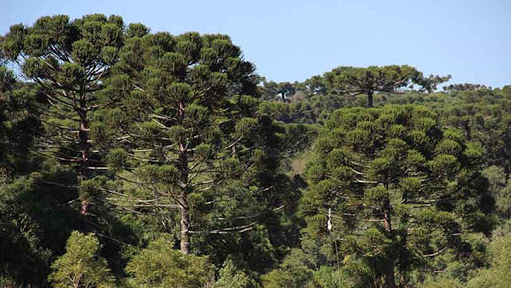

Parques Estaduais de Santa Catarina
Portal informativo sobre os Parques Estaduais de Santa Catarina, reunindo informações sobre conservação, biodiversidade e visitação.
Conheça os parques
Portal dos Parques
- Parque Estadual Acaraí
- Parque Estadual Rio Canoas
- Parque Estadual Rio Vermelho
- Parque Estadual das Araucárias